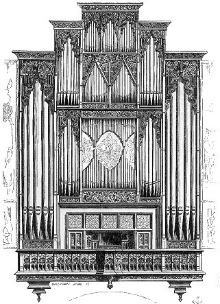
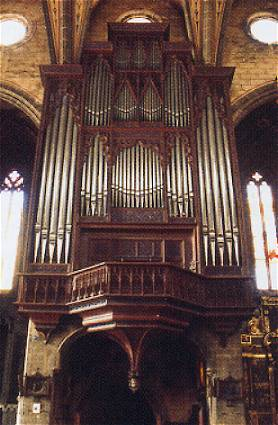

|
 Figure 1 |
 |
Il n'est pas inintéressant de comparer le dessin du buffet de l'orgue de la cathédrale Saint Jean de Perpignan fait par Viollet le Duc, à une photographie contemporaine. Le positif du XVIe siècle dont il fait mention sans le dessiner a été enlevé lors de la reconstruction de la partie instrumentale de cet orgue de 1854 à 1857 par A. CAVAILLÉ-COLL. Si l'on ne peut accorder trop de crédit à la hauteur des écusson des tuyaux de façade (représentés fort peu haut, ce qui est assez normal pour des tuyaux anciens), il faut surtout noter la présence de tuyaux retournés dans la plate-face centrale, laissant apparaître une peinture, disparue aujourd'hui.
Ces tuyaux étaient-ils alimentés ? Leur nombre le laisse penser mais il faudrait voir s'il reste des traces archéologiques sur les traverses du buffet pour que cette hypothèse soit confirmée.
On notera enfin que le gros cul de lampe central que nous voyons aujourd'hui sous la console et qui se termine par une tête de Maure articulée, ne figure pas sur le dessin de Viollet. Est-ce une récupération du buffet du positif par CAVAILLÉ-COLL ? La questions reste en suspens.